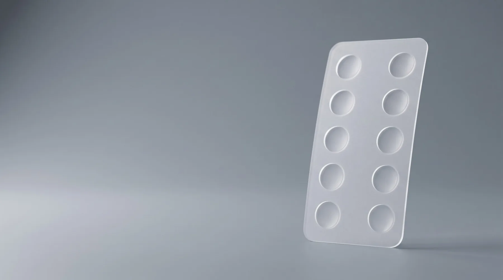
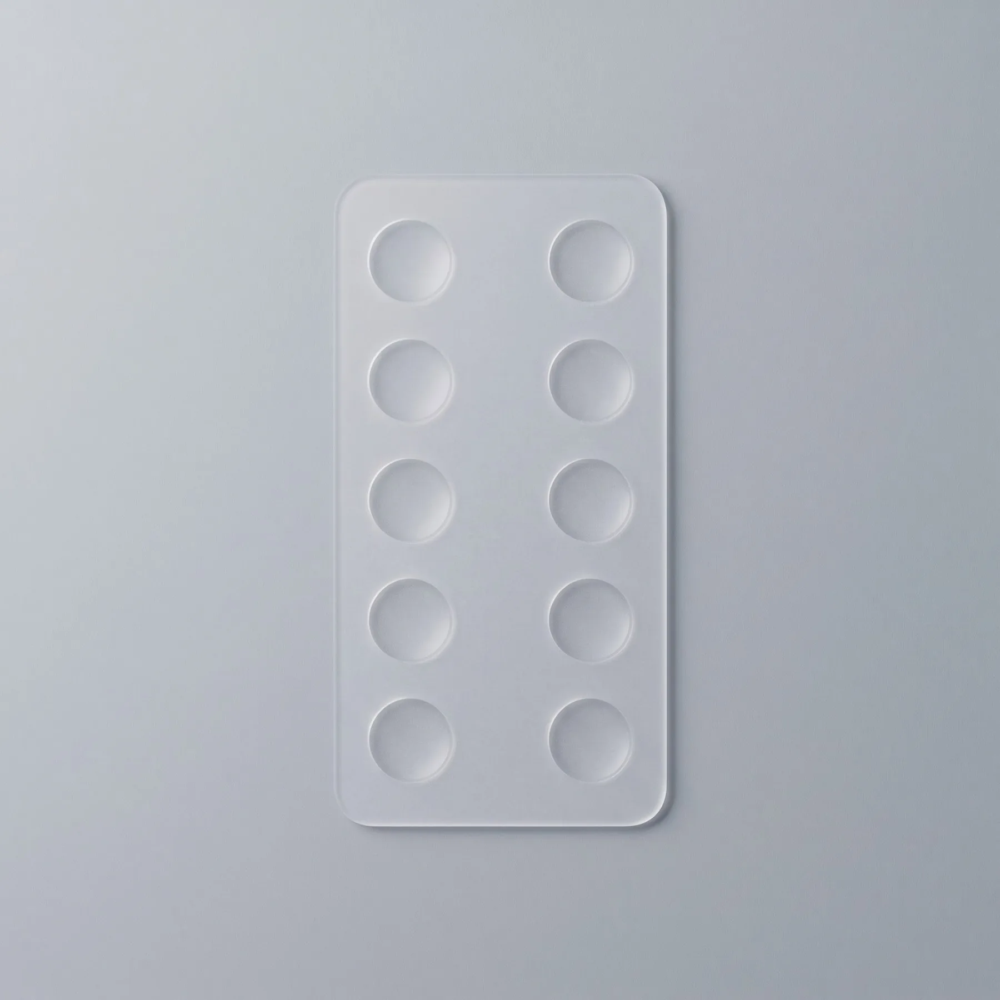
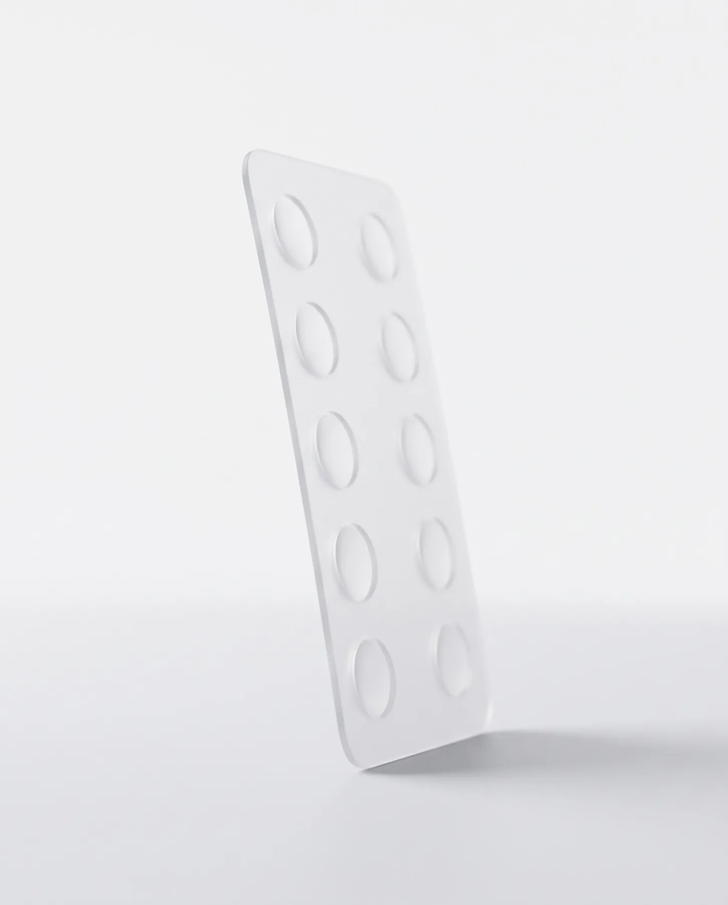
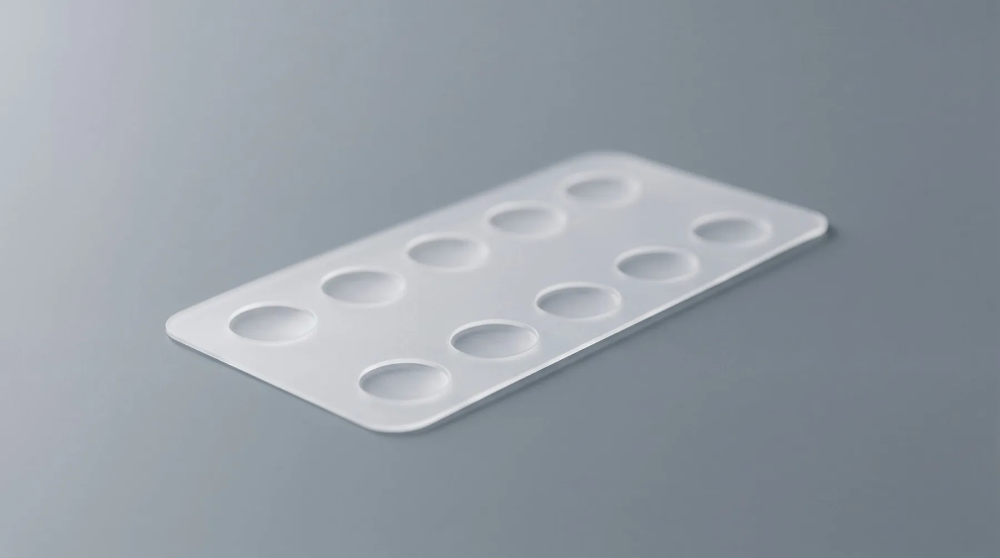
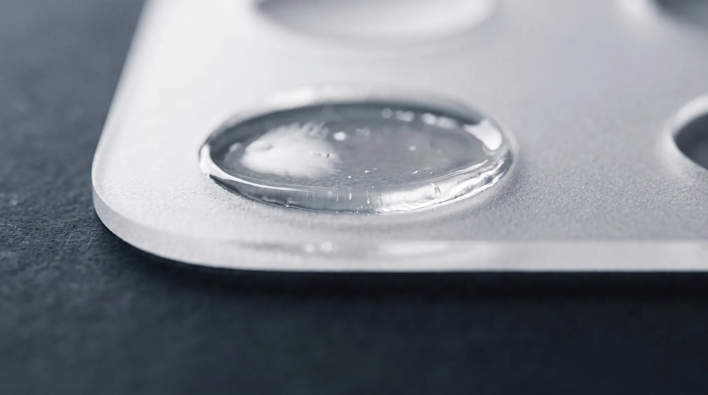
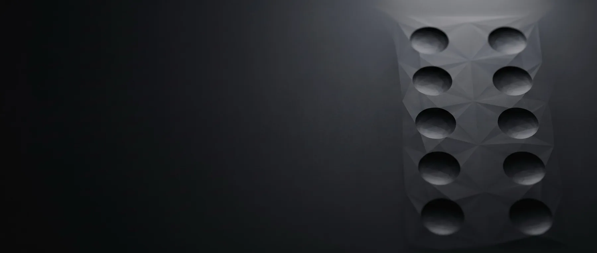

Inovasi Universitas Airlangga
Inovasi Universitas Airlangga untuk Pengembangan Diagnosis Alergi yang Lebih Praktis
Kit diagnostik alergi berbentuk patch transdermal merupakan inovasi Universitas Airlangga yang mengintegrasikan sepuluh jenis ekstrak alergen dalam satu sistem patch. Teknologi ini dirancang untuk mendukung identifikasi respons terhadap alergen melalui aplikasi pada permukaan kulit tanpa penusukan.
Tentang produk
Kit ini dikembangkan sebagai kandidat perangkat diagnostik alergi dengan memanfaatkan ekstrak alergen yang ditempatkan dalam sediaan patch transdermal. Sistemnya terdiri atas bagian patch yang mengandung ekstrak alergen dan bagian seal sebagai penutup.
Melalui kontak dengan kulit, komponen alergen diharapkan dapat menimbulkan respons yang mendukung proses identifikasi alergi. Efektivitas diagnostik, keamanan penggunaan pada manusia, dan interpretasi hasil masih memerlukan validasi klinis.
Bahan polimer sebagai pembawa ekstrak alergen; dirancang untuk mendukung kontak antara ekstrak alergen dan permukaan kulit.

POLIMER PEMBAWA · EKSTRAK ALERGEN
Menutup bagian patch sebelum aplikasi dan membantu melindungi komponen di dalamnya dari paparan lingkungan.

SEAL · PELINDUNG SEBELUM APLIKASI
Jenis ekstrak alergen
Berdasarkan deskripsi invensi, kit memuat sepuluh jenis ekstrak alergen:
Susunan dan jumlah sumur pada patch final dapat berbeda.
Teknologi produk
Bagian utama kit menggunakan bahan polimer sebagai pembawa ekstrak alergen. Komponen ini dirancang untuk mendukung kontak antara ekstrak alergen dan permukaan kulit.
Seal menutup bagian patch sebelum aplikasi dan membantu melindungi komponen di dalamnya dari paparan lingkungan.

Seal dibuka sebelum patch diaplikasikan.
Patch ditempelkan pada area kulit yang ditentukan dalam protokol, seperti lengan bawah.
Kontak ekstrak alergen dengan kulit ditujukan untuk menghasilkan respons yang selanjutnya dievaluasi dalam proses pengembangan diagnostik.
Lama aplikasi, waktu pembacaan, kriteria hasil, dan prosedur keselamatan perlu ditetapkan melalui penelitian serta validasi klinis.
Bentuk patch memungkinkan aplikasi melalui permukaan kulit. Pendekatan ini dikembangkan dengan mempertimbangkan kemudahan aplikasi dan kenyamanan pengguna.
Sepuluh jenis ekstrak alergen dimuat dalam satu sistem kit. Integrasi ini menjadi bagian utama konsep teknologi yang dikembangkan.
Kombinasi patch dan seal menawarkan desain yang sederhana untuk mendukung pengembangan perangkat diagnostik berbasis kontak kulit.
Inovasi ini membuka peluang pengembangan kapasitas riset, formulasi, pengendalian mutu, dan produksi ekstrak alergen di Indonesia.
Landasan penelitian
Penelitian pendahuluan yang dijelaskan dalam dokumen invensi menunjukkan bahwa ekstrak alergen yang dikembangkan mampu menginduksi pematangan sel dendritik dari sel mononuklear darah perifer manusia secara in vitro.
Pengamatan mencakup perubahan penanda sel, termasuk CD209 dan CD86, serta respons sitokin proinflamasi. Temuan tersebut menjadi landasan awal untuk mempelajari interaksi ekstrak alergen dengan sistem imun.
Hasil penelitian seluler ini belum menetapkan akurasi diagnostik maupun keamanan klinis kit pada manusia. Penelitian lanjutan diperlukan untuk mengevaluasi kinerja produk secara menyeluruh.

Universitas Airlangga
Kit diagnostik alergi berbasis patch transdermal dikembangkan oleh tim inventor yang melibatkan unsur Fakultas Farmasi, Fakultas Ekonomi dan Bisnis, Fakultas Sains dan Teknologi, serta Fakultas Perikanan dan Kelautan Universitas Airlangga.
Kolaborasi lintas disiplin ini mendukung pengembangan gagasan teknologi kesehatan, mulai dari kajian ilmiah dan pengembangan produk hingga peluang pemanfaatannya.
Dalam surat pernyataan pengalihan hak invensi yang menjadi dokumen pendukung, Universitas Airlangga disebut sebagai pihak penerima pengalihan hak atas invensi dari para inventor.
Para inventor di balik pengembangan teknologi
| No. | Nama inventor | Afiliasi |
|---|---|---|
| 01 | Prof. apt. Junaidi Khotib, S.Si., M.Kes., Ph.D. | Fakultas Farmasi, Universitas Airlangga |
| 02 | Prof. Dr. Muhammad Nafik Hadi Ryandono, S.E., M.Si. | Fakultas Ekonomi dan Bisnis, Universitas Airlangga |
| 03 | Andi Hamim Zaidan, S.Si., M.Si., Ph.D. | Fakultas Sains dan Teknologi, Universitas Airlangga |
| 04 | Daruti Dinda Nindarwi, S.Pi., M.P. | Fakultas Perikanan dan Kelautan, Universitas Airlangga |
| 05 | apt. Ahmad Dzulfikri Nurhan, S.Farm., M.Farm. | Fakultas Farmasi, Universitas Airlangga |
| 06 | Dr. apt. Honey Dzikri Marhaeny, S.Farm., M.Farm. | Fakultas Farmasi, Universitas Airlangga |
| 07 | Dr. apt. Yusuf Alif Pratama, S.Farm., M.Farm. | Fakultas Farmasi, Universitas Airlangga |
Pengembangan dan kerja sama
Pengembangan kit diarahkan menuju teknologi diagnostik yang memiliki dasar ilmiah, mutu yang konsisten, dan kinerja klinis yang terukur.

Peluang riset, validasi, dan hilirisasi terbuka bagi mitra akademik maupun industri.
Hubungi timFAQ
Kit dikembangkan untuk mendukung identifikasi respons terhadap alergen melalui aplikasi ekstrak alergen dalam bentuk patch pada kulit.
Tujuan invensi ini adalah pengembangan diagnostik alergi. Penggunaannya sebagai terapi tidak menjadi tujuan produk dalam deskripsi invensi yang disajikan.
Penelitian awal yang dijelaskan berfokus pada respons imun secara in vitro. Akurasi diagnostik pada manusia masih perlu dibuktikan melalui validasi klinis.
Dokumen yang tersedia belum menetapkan prosedur penggunaan mandiri. Penggunaan pada manusia harus mengikuti protokol penelitian atau petunjuk resmi sesuai tahap pengembangan dan perizinannya.
Ketersediaan komersial dan status izin edar belum dikonfirmasi dalam dokumen yang menjadi dasar informasi website ini.
Mitra pengembangan
Pengembangan inovasi kit diagnostik alergi berbasis patch transdermal Universitas Airlangga didukung oleh jejaring kemitraan yang menghubungkan dunia akademik, penelitian, dan industri. Kolaborasi ini diarahkan untuk memperkuat landasan ilmiah, pengembangan teknologi, serta peluang hilirisasi produk.
Mitra industri nasional dalam jejaring pengembangan inovasi, yang membuka peluang sinergi antara hasil penelitian perguruan tinggi dan kebutuhan industri kesehatan.
Mitra akademik internasional melalui Kulliyyah of Pharmacy, yang mendukung jejaring penelitian dan pertukaran pengetahuan dalam bidang farmasi serta pengembangan teknologi kesehatan.
Mitra akademik internasional melalui Department of Pharmacy, yang memperkuat jejaring keilmuan dan kolaborasi penelitian dalam bidang farmasi.
Mitra akademik internasional dalam jejaring penelitian farmasi, yang mendukung pertukaran pengetahuan dan pengembangan pendekatan ilmiah untuk inovasi kesehatan.
Melalui kemitraan tersebut, Universitas Airlangga mendorong pengembangan teknologi diagnostik alergi menuju tahapan penelitian lanjutan, validasi, dan pemanfaatan yang lebih luas.